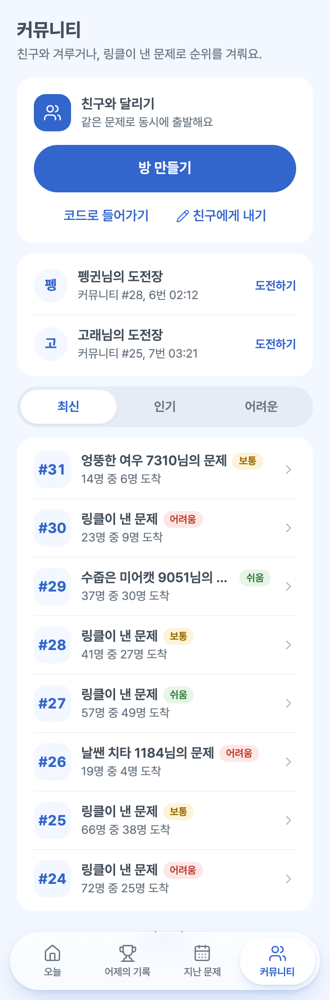
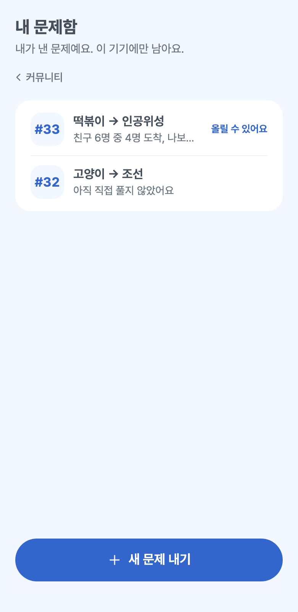
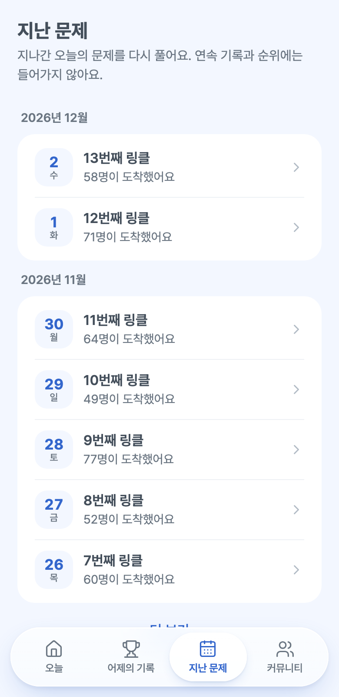
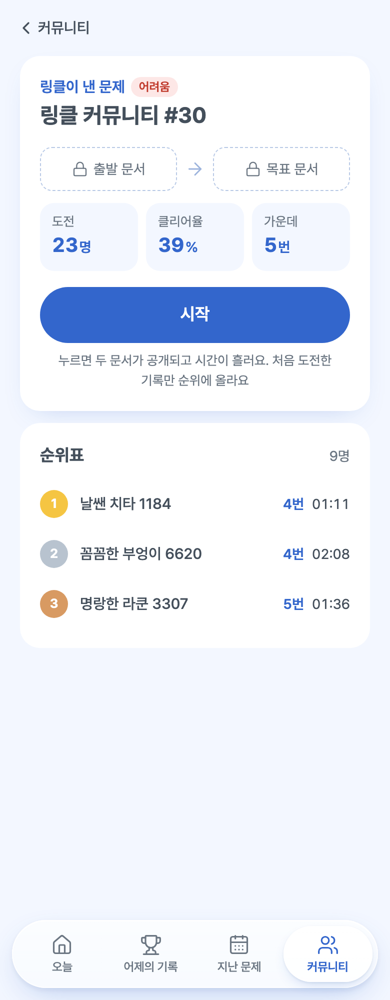

커뮤니티 탭이 "혼자 더 풀기"와 "친구와 겨루기"를 반씩 하고 있어요
지금 커뮤니티 탭 맨 위에는 같이 달리기와 받은 도전장이 있고, 그 아래에는 모르는 사람이 낸 문제 목록과 순위표가 있어요. 둘 다 "겨루기"라서 한 탭에 넣었지만, 실제로 하는 일은 달라요. 하나는 혼자 하나 더 푸는 일(지난 문제 탭과 같은 일)이고, 하나는 아는 사람을 부르는 일이에요. 이 시안은 그 둘을 탭으로 나눠요. 아래 탭은 그대로 네 개예요. 화면은 지금 앱의 실측 값으로 만든 키트로 그렸어요. 아직 구현 전이고, 화면 속 이름과 숫자는 예시예요.
"더 풀기" 탭 = 지난 문제 + 링클이 낸 + 사람들이 낸
지금 지난 문제 탭 자리에 들어가요. 혼자 푸는 끝없는 문제가 한곳에 모여요. 문제별 순위표는 그대로예요.
"친구" 탭 = 같이 달리기 + 도전장 + 내가 낸 문제
지금 커뮤니티 탭 자리에 들어가요. 받은 도전장뿐 아니라 보낸 도전장의 결과도 여기서 봐요.
두 탭은 문제 카드에서 만나요
더 풀기의 어떤 문제든 "친구와 이 문제로 달리기"로 바로 방을 열어요. 끝내면 도전장을 보내요.
같은 일이 두 탭에 나뉘고, 다른 일이 한 탭에 섞여 있어요
지금 앱(main ffb8c83)을 가짜 API로 띄워 찍었어요. 받은 도전장 둘, 내가 낸 문제 둘, 사람들이 올린 문제 셋이 섞인 커뮤니티 목록이에요. 번호는 아래 진단 번호와 같아요.

12345
6
7
8- 설명 한 줄이 두 가지 겨루기를 약속해요. "친구와 겨루거나, 링클이 낸 문제로 순위를 겨뤄요." 아는 사람과의 승부와 모르는 사람과의 순위표가 한 문장, 한 화면에 있어서 이 탭이 무엇을 하는 곳인지 한 번에 읽히지 않아요. screens/Community.tsx — ListPage desc
- 혼자 온 사람도 같이 달리기 카드부터 봐요. 탭을 열 때마다 화면의 주 단추가 "방 만들기"예요. 친구가 옆에 없으면 이 카드를 지나 내려가야 문제 목록이 나와요. 반대로 친구와 놀러 온 사람에게는 목록 여덟 줄이 필요 없어요. Community.tsx — Friends (Cta) · CommunityPage
- 문제 내기가 같이 달리기 카드의 글자 단추에 숨어 있어요. "친구에게 내기"가 "코드로 들어가기" 옆에 있어서 방의 기능처럼 보여요. 내 문제함은 이 단추를 눌러야만 가요. Community.tsx — Friends · TextButton → /community/mine
- 받은 도전장만 있고, 보낸 도전장의 결과는 어디에도 없어요. 안 푼 것 세 개만 보여요. 내가 보낸 도전장을 누가 풀었는지, 내 기록을 넘었는지는 링크를 다시 열어야 알아요. 겨루기가 한 번 주고받고 끝나요. Community.tsx — Inbox slice(0, 3) · game/inbox.ts — 받은 것만 저장
- 목록 줄의 제목이 "링클이 낸 문제"로 되풀이돼요. 여덟 줄 중 다섯 줄이 같은 제목이라 줄을 구분하는 것은 번호뿐이에요. 사람이 낸 문제는 "수줍은 미어캣 9051님의 …"처럼 이름이 길어 잘려요. 탭 이름은 커뮤니티인데 목록의 대부분은 링클이 낸 문제예요. CommunityPage — ListRow title
- 내 문제함은 탭이 없는 따로 떨어진 화면이에요. 돌아가기가 "커뮤니티"이고, 아래 탭이 치워져 있어요. 내 문제에 친구가 몇 명 도전했는지 보려면 매번 커뮤니티 → 글자 단추 → 내 문제함으로 들어가야 해요. screens/Make.tsx — MinePage · useNoTabs()
- 지난 문제와 커뮤니티 목록은 같은 일을 같은 모양으로 해요. 둘 다 "오늘의 문제를 끝낸 뒤 하나 더 혼자 풀기"이고, 줄도 꼬리표 + 제목 + 도착 인원으로 같아요. 설계 문서도 둘을 "무한 모드"로 묶었어요(12장). 그런데 탭은 둘로 나뉘어 있어요. screens/Archive.tsx — ListRow · DESIGN.md 12장
- 문제 카드에서 할 수 있는 건 혼자 시작뿐이에요. 이 문제로 친구와 달리려면 커뮤니티로 돌아가 방을 만들고, 대기실에서 "커뮤니티 문제"를 골라 같은 번호를 다시 찾아야 해요. 제목도 "링클 커뮤니티 #30"인데 바로 위 꼬리는 "링클이 낸 문제"라 이름이 둘이에요. screens/Puzzle.tsx — Intro · Room.tsx — PickSheet('community')
무엇을 기준으로 나눌지가 갈림길이에요
셋 다 아래 탭은 네 개예요. A는 "혼자 / 친구와"로 탭을 나누고, B는 커뮤니티 탭 안에서 위를 둘로 나누고, C는 문제를 주인으로 두고 겨루기를 문제의 동작으로 붙여요. A를 추천해요. A에도 C의 한 수(문제 카드에서 바로 친구와 달리기)를 빌려 왔어요.
"더 풀기"와 "친구" 두 탭
핵심 한 수 · 탭 이름이 곧 할 일이에요. 혼자면 "더 풀기", 친구와면 "친구"
좋은 점
- 탭마다 주 단추가 하나로 또렷해요(방 만들기 / 문제 고르기)
- 지난 문제와 커뮤니티 문제가 한 목록 모양으로 모여요(진단 7)
- 보낸 도전장, 내가 낸 문제가 탭 안에 자리를 얻어요(4, 6)
대가
- "지난 문제" 탭 이름이 바뀌어 익숙한 사람이 한 번 헤매요
- 주소가 바뀌어 옮김 처리가 필요해요(
/archive,/community) - 16.7에서 정한 "커뮤니티 탭 안에"를 다시 정해야 해요
선례 · The Wiki Game 앱(Daily · Practice · Challenge friends를 모드로 나눔) · Lichess(퍼즐과 친구 대국이 다른 메뉴)
커뮤니티 맨 위 "친구 | 문제" 전환
핵심 한 수 · 탭은 그대로 두고, 맨 위 전환으로 두 일을 갈라요
좋은 점
- 탭과 주소가 그대로라 가장 적게 바꿔요
- 16.7의 "커뮤니티 탭 안"을 지켜요
대가
- 탭을 열 때 어느 쪽을 먼저 보일지 정해야 하고, 다른 쪽은 숨어요
- 지난 문제와 커뮤니티 문제는 여전히 두 탭에 나뉘어요(진단 7 그대로)
- 탭 안에 전환이 또 있어 정렬 전환과 두 겹이 돼요
선례 · 데일리 게임에서 같은 모양은 찾지 못했어요. 일반 앱의 "팔로잉 | 추천" 위 전환과 같은 모양이에요
목록 줄마다 "혼자 / 친구와"
핵심 한 수 · 겨루기는 따로 가는 곳이 아니라 문제에 붙은 동작이에요
좋은 점
- 사람이 낸 문제가 곧 친구와 겨룰 거리가 돼요
- 화면을 거의 늘리지 않아요
대가
- 줄마다 단추 둘이라 목록이 무거워져요
- 문제 없이 시작하는 랜덤 룰렛 방, 보낸 도전장, 내 문제함의 자리가 없어요
선례 · Kahoot("찾았거나 만든 퀴즈로 친구에게 도전") · GeoGuessr(사용자 지도를 어느 모드로든 플레이)
없어지는 기능은 없고, 자리만 바뀌어요
지금 커뮤니티 탭과 지난 문제 탭에 있는 것을 하나씩 옮겼어요. 새로 생기는 것은 세 가지예요: 보낸 도전장의 결과, 친구 탭에서 도전장 보내기, 문제 카드의 "친구와 이 문제로 달리기".
| 무엇 | 지금 | 시안 |
|---|---|---|
| 지난 오늘의 문제 | 지난 문제 탭 | 더 풀기 › 지난 문제 |
| 링클이 낸 문제, 문제별 순위표 | 커뮤니티 탭 목록(섞여서) | 더 풀기 › 링클이 낸 |
| 사람들이 올린 문제, 신고 | 커뮤니티 탭 목록(섞여서) | 더 풀기 › 사람들이 낸 |
| 같이 달리기(방 만들기, 코드, QR) | 커뮤니티 맨 위 카드 | 친구 맨 위 카드 |
| 받은 도전장 | 커뮤니티, 안 푼 것 3개 | 친구 › 도전장 |
| 보낸 도전장의 결과 | 없음 | 친구 › 도전장 새로 |
| 도전장 보내기 | 도착 화면 | 도착 화면 그대로 + 친구 › 도전장 › 보내기 새로 |
| 문제 내기, 내 문제함 | 글자 단추 → 탭 없는 화면 | 친구 › 내가 낸 문제 |
| 이 문제로 같이 달리기 | 방 → 문제 고르기 → 목록에서 다시 찾기 | 문제 카드의 두 번째 단추 새로 |
친구 탭은 "부르기, 주고받기, 내기" 세 카드예요
지금은 같이 달리기 카드 아래에 받은 도전장이 끼어 있고, 그 아래가 모르는 사람의 문제 목록이에요. 친구 탭에는 아는 사람과 하는 일만 남겨요. 위에서부터 같이 달리기(지금 부르기), 도전장(따로 주고받기), 내가 낸 문제(친구에게 낼 거리) 순서예요. 문제 목록은 더 풀기로 갔어요.
지금 · 커뮤니티
시안 · 친구 (주고받은 게 있을 때)
도전장
보내기- 펭도전하기펭귄님의 도전장새로링클이 낸 #28 · 6번 02:12
- 여되받기여우님이 내 기록을 넘었어요링클이 낸 #27 · 01:48, 나는 02:05
- 수내 도전장 · 12월 2일 링클3명 도전, 아직 아무도 못 넘었어요
내가 낸 문제
새로 내기- #33올리기떡볶이 → 인공위성친구 6명 중 4명 도착, 나보다 짧게 1명
- #32풀기고양이 → 조선직접 풀어야 보낼 수 있어요
- 설명이 한 가지만 약속해요. "아는 사람끼리 겨뤄요." 모르는 사람과의 순위표는 이 탭에 없어요. 순위는 그 방, 그 도전장 안에만 있다는 원칙(16.1)을 첫 줄에서 말해요.
- 탭의 주 단추는 방 만들기 하나예요. 카드 모양은 지금과 같고, 아래 글자 단추에서 "친구에게 내기"를 빼고 "QR 찍기"를 넣었어요. 방에 들어가는 길 셋(만들기, 코드, QR)만 이 카드에 있어요.
- 도전장 카드 제목 옆에 "보내기"가 생겨요. 풀어 본 문제 중 하나를 골라 보내요(오른쪽 시트). 지금은 도착 화면을 지나야만 보낼 수 있어요.
- 보낸 도전장의 결과가 받은 것과 한 목록에 떠요. "여우님이 내 기록을 넘었어요"를 누르면 두 길 견주기로 가고, "되받기"는 같은 문제로 다시 도전해요. 새로 받은 것과 새 결과만 위로 올려요.
- 내가 낸 문제가 탭 안에 자리를 얻어요. 줄마다 다음에 할 일 하나(풀기, 보내기, 올리기)를 오른쪽에 써요. "새로 내기"는 출제 화면으로 가요. 따로 떨어진 내 문제함 화면은 "모두 보기"로만 남겨요.
처음 · 주고받은 게 없을 때
도전장
내가 낸 문제
두 문서를 골라 직접 풀면, 그 문제로 친구에게 도전장을 보내거나 같이 달릴 수 있어요.
- 빈 카드 대신 도전장이 오가는 길을 세 줄로 보여 줘요. 도전장은 문제를 푼 뒤에만 생겨서, 처음 온 사람은 어디서 시작하는지 몰라요. 첫 줄이 더 풀기 탭을 가리켜요.
- 문제 내기는 글자 단추예요. 처음 화면의 주 단추는 여전히 방 만들기 하나예요.
도전장 보내기 시트
어떤 기록으로 보낼까요
풀어 본 문제만 보낼 수 있어요. 오늘의 문제는 빼요.
- #28링클이 낸 문제보통어제 · 4번 01:31 ·
- 2일13번째 링클지난 문제3일 전 · 5번 02:05 ·
- 미미어캣님의 문제쉬움지난주 · 3번 00:58 ·
- 풀어 본 문제만 줄로 보여요. 오늘의 문제는 1차에서 빼기로 했어요(16.7). 지난 문제, 링클이 낸, 사람들이 낸 문제가 최근 순으로 섞여요.
- 줄을 누르면 바로 공유 창이 열려요. 지금 도착 화면의 "도전장 보내기"와 같은 일(
sendChallenge)이에요. 색 칸이 있어 어떤 판이었는지 알아봐요. - 무엇이 생기는지 한 줄로 말해요. 같은 링크로 푼 사람끼리만 순위가 생긴다는 것.
혼자 하나 더 풀 문제는 한 탭에서 세 갈래로 골라요
지금 지난 문제 탭 자리예요. 위 전환으로 지난 문제, 링클이 낸, 사람들이 낸을 골라요. 지금 커뮤니티의 정렬 전환(최신, 인기, 어려운)은 목록 위 작은 정렬 단추로 내려서, 전환이 두 겹이 되지 않게 했어요. 줄의 제목은 "누가 냈는지"가 아니라 그 갈래에서 줄을 가르는 값으로 바꿨어요.
지금 · 지난 문제 탭
시안 · 사람들이 낸
- 여여우님의 문제보통14명 중 6명 도착 · 출제자 5번
- 미3번미어캣님의 문제쉬움37명 중 30명 도착 · 출제자 3번
- 치치타님의 문제어려움19명 중 4명 도착 · 출제자 6번
- 부부엉이님의 문제보통11명 중 7명 도착 · 출제자 4번
- 라라쿤님의 문제쉬움9명 중 8명 도착 · 출제자 3번
- 탭 설명은 한 가지만 말해요. 연속 기록에 들지 않는다는 것. 세 갈래 모두 같아서 목록마다 되풀이하지 않고 여기서 한 번만 말해요.
- 세 갈래가 위 전환 하나에 있어요. 처음 열면 지난 문제가 보여요(지금 지난 문제 탭을 쓰던 사람이 그대로 찾게). 마지막에 고른 갈래를 기억해요.
- 사람이 낸 문제는 동물 표시와 짧은 이름으로 나눠요. "수줍은 미어캣 9051님의 …"이 잘리던 자리를 "미어캣님의 문제"로 줄였어요. 친구 탭, 도전장과 같은 표시라 같은 사람인지 알아봐요. 출제자의 이동 수를 함께 써요(16.4).
- 내가 푼 문제는 오른쪽에 내 결과가 붙어요. 지금 지난 문제 탭의 체크 표시와 같은 자리예요.
시안 · 링클이 낸
- #3023명 중 9명 도착어려움가운데 5번
- #282위41명 중 27명 도착보통가운데 4번
- #277위57명 중 49명 도착쉬움가운데 3번
- #2566명 중 38명 도착보통가운데 5번
- #2472명 중 25명 도착어려움가운데 6번
- "링클이 낸 문제"를 줄마다 쓰지 않아요. 갈래 이름이 이미 말해요. 대신 도착 인원을 제목으로 올려, 줄마다 다른 값이 보이게 했어요.
- 내 순위가 오른쪽에 붙어요. 지금과 같아요. 이 갈래에만 순위표가 있다는 것을 목록 위 한 줄로 말해요.
어떤 문제든 카드에서 바로 친구와 달릴 수 있어요
탭을 나누면 "이 문제로 친구와 겨루고 싶다"가 두 탭 사이에 끼어요. 그 다리를 문제 카드에 놓아요. 주 단추 "혼자 풀기" 아래에 같은 높이의 두 번째 단추를 두고, 누르면 이 문제가 골라진 방이 바로 생겨요. 끝까지 풀면 도착 화면에서 도전장을 보내는 길은 지금 그대로예요.
지금 · 커뮤니티 문제 카드
시안 · 더 풀기 문제 카드
- 도전
- 23명
- 클리어율
- 39%
- 가운데
- 5번
순위표
9명- 1날쌘 치타 11844번01:11
- 2꼼꼼한 부엉이 66204번02:08
- 3명랑한 라쿤 33075번01:36
- 제목은 하나의 이름만 써요. "링클 커뮤니티 #30"과 "링클이 낸 문제"가 겹치던 것을, 위 꼬리(누가 냈나)와 번호, 큰 제목(몇 명이 도착했나)으로 나눴어요.
- "친구와 이 문제로 달리기"가 두 번째 단추예요. 주 단추와 같은 높이 56, 흰 바탕에 파란 테두리예요. 누르면 이 문제가 골라진 대기실로 가요. 대기실에서 문제를 다시 찾지 않아요.
- 순위에 무엇이 들어가는지 한 줄로 말해요. 같이 달리기에서 처음 푼 판도 순위표의 첫 도전이 된다는 것(지금 대기실 안내와 같아요).
새 표는 없고, 이 기기의 기록 하나와 API 두 개가 늘어요
주소
| 지금 | 시안 |
|---|---|
/archive | /more (지난 문제). 예전 주소는 옮겨 줘요 |
/community | /more?from=linkle · ?from=people. 예전 주소는 링클이 낸으로 |
| (없음) | /friends |
/community/mine, /community/new | /friends/mine, /friends/new |
/archive/:id, /community/:id, /c/:code, /room/:code | 그대로. 공유 문구와 도전장 링크가 이미 밖에 나가 있어요 |
새로 필요한 것
| 무엇 | 어떻게 |
|---|---|
| 보낸 도전장 목록 | 이 기기에 남겨요 linkle:sent:v1. 받은 도전장(linkle:inbox:v1)과 같은 방식. 로그인이 없어 서버에 "누가 보냈나" 목록을 두지 않아요 |
| 보낸 도전장의 결과 | GET /api/challenges?codes=A,B,C → 코드마다 도전한 사람 수, 가장 빠른 사람, 나를 넘은 사람. 지금 GET /api/challenges/:code를 여러 개 묶은 것 |
| 이 문제로 방 만들기 | POST /api/rooms 본문에 { source, puzzleId }. 방이 생길 때 설정을 미리 채워요 |
| 보낼 수 있는 기록 | 지금 others(이 기기의 끝난 판 80개)에서 골라요. 서버 요청 없음 |
| 사람들이 낸만 보기 | GET /api/community?kind=official|community. 지금은 둘이 섞여서 와요 |
새 토큰 없이, 조각 세 개만 늘어요
지금 그대로 쓰는 것
| 조각 | 값 · 출처 |
|---|---|
| 카드, 카드 제목 | 흰 바탕 · 모서리 20 · 17/700 · Card, CardTitle |
| 주 단추 | 높이 56 · 17/600 · Cta |
| 줄 | 최소 68 · 제목 16/22 600 · 설명 14/20 · ListRow |
| 위 전환 | 높이 40 칸 · 바탕 #e6ecf6 · Segmented |
| 동물 표시 | 40 원 · Ava (친구와 겨루기에서 만든 것) |
| 아래 시트 | 모서리 24 · 같이 달리기 대기실의 시트 |
| 아래 탭 | 칸 네 개 그대로 · 아이콘만 CalendarDays → Puzzle |
새로 필요한 조각
| 조각 | 값 · 이유 |
|---|---|
| 두 번째 단추 | 높이 56 · 흰 바탕 · 안쪽 테두리 1.5 #dbe8f9 · 글자 주 색. 주 단추와 크기를 맞춰요(버튼 크기 통일) |
| 카드 제목 옆 글자 단추 | 15/600 · 높이 36 · 주 색. TextButton의 작은 꼴. 카드마다 하나 |
| 목록 위 한 줄과 정렬 단추 | 13/18 회색 설명 + 흰 알약 32. 위 전환과 정렬이 두 겹이 되지 않게 정렬을 작게 내려요 |
| 새로 꼬리 | 12/600 · 채운 주 색 알약. 새로 받은 도전장과 새 결과에만 |
구현할 때 지킬 것
화면 말 대응표
| 내부 말 | 화면 |
|---|---|
| archive | 지난 문제 |
| kind = official | 링클이 낸 (문제) |
| kind = community | 사람들이 낸 / ○○님의 문제 |
| kind = random | 같이 달리기에서 나온 문제 (더 풀기 목록에는 없음) |
| status = unlisted | 친구에게 낸 문제 (내가 낸 문제에만) |
| inbox / sent | 도전장 (받은 것과 보낸 것을 나누는 말 없이 문장으로) |
| community (탭) | 쓰지 않아요. 더 풀기, 친구 |
규칙
/archive, /community는 옮겨 주고, 문제 · 도전장 · 방 주소는 그대로.참고한 제품과 문서
모드를 하는 일로 나누기
- The Wiki Game 앱 · App Store 설명 (2026-11 읽음) — Daily Challenge, Practice, Challenge friends를 따로 둬요. 팀 레이스는 코드나 QR로 4명까지. 위키 레이스 게임이 "혼자 연습"과 "친구에게 보내기"를 나눈 선례예요. 레벨 2,000개 여정은 가져오지 않아요
- Lichess (2차, 포럼 글로 확인) — 퍼즐과 "친구와 두기"가 다른 메뉴, 친구와 두기는 링크 하나로 시작. 전체 레이팅은 가져오지 않아요
- GeoGuessr (2차, 위키백과) — 사용자가 만든 게임과 무작위 게임이 같은 모드에서 돌아요. 방향 C의 근거. 메뉴 배치는 원문에서 확인하지 못했어요
찾은 것 · 만든 것으로 친구에게
- Kahoot! · App Store 설명 (2026-11 읽음) — "찾았거나 만든 퀴즈로 친구에게 도전". 문제 카드의 "친구와 이 문제로 달리기"와 친구 탭의 "내가 낸 문제"로 가져왔어요
- NYT Games 친구 순위 (2차, App Store 설명 검색 요약) — 친구를 더해 그날의 점수를 함께 봐요. 친구 목록은 로그인이 필요해 가져오지 않고, "보낸 도전장의 결과"로 같은 재미를 줘요
- 링클 친구와 겨루기 시안 (
docs/design/friend-race, 2026-11-23) — 같이 달리기 카드, 받은 도전장, 내 문제함, 동물 표시. 이번 시안은 자리만 옮겨요
탭 나누기 → 보낸 도전장 → 문제 카드의 다리 순서로 올려요
나눠 올릴 순서
/more(세 갈래 전환, 정렬 단추), /friends(지금 Friends · Inbox 카드를 옮김), 예전 주소 옮기기, 아래 탭 이름과 아이콘. 게임과 방 화면은 바뀌지 않아요.linkle:sent:v1, 묶음 조회 API, 결과 줄, 보내기 시트.POST /api/rooms에 문제를 미리 채우기, 두 번째 단추.kind 거르기.